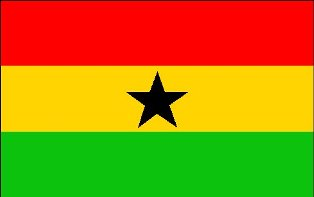

ABOUT GHANA
The Republic of Ghana is centrally located in West Africa and has a total land area of 238, 537 square kilometres. Ghana is rumoured to be the friendliest country in sub-Saharan Africa. It is bordered by French-speaking countries, on the east by the Republic of Togo, on the north and northwest by Burkina Faso, and on the West by Cote d’Ivoire.
The gulf of Guinea lies to the south and stretches across the 560 kilometres of the country’s coastline. Ghana is a lowland country, except for a range of hills that lie on the eastern border and Mt. Afadjato, the highest point of about 884 metres above sea level, which is to the west of the Volta River.
Ghana has a long stretch of sandy coastline backed by a coastal plain that is crossed by several rivers and streams. The climate of Ghana is tropical, but temperatures and rainfall vary by distance from the coast and elevation. The average annual temperature is about 26ºc (79ºF). There are two distinct rainy seasons, April to June and September to November. In the north, however, the rainy season begins in March and last until September. The harmattan, a dry desert wind, blows from the northeast between December and March, lowering the humidity and creating very warm days and cool nights in the north. In the south, the effects of the harmattan are felt mainly in January.
Ghana gained its independence from British rule on 6 March 1957, and on 1 July became a sovereign state in the British Commonwealth of Nations. The administrative and political capital of the country is Accra with a population of over 2 million. Ghana is divided into 10 administrative regions and 138 districts. Ghana is a constitution democracy and currently operates a multi-party democratic presidential system of government following the promulgation of the 1992 fourth republic constitution of Ghana.
 The flag of Ghana was designed to replace the flag of the United Kingdom upon attainment of independence in 1957. It was flown until 1959, and then reinstated in 1966. It consists of the Pan-African colours of red, yellow, and green, in horizontal stripes, with a black five-pointed star in the centre of the gold stripe.
The Ghanaian flag was the first African flag after the flag of Ethiopia to feature these colours. The black star was adopted from the flag of the Black Star Line, a shipping line incorporated by Marcus Garvey that operated from 1919 to 1922, and gives the Ghana national football team their nickname, the Black Stars.
The red represents the blood of those who died in the country's struggle for independence, the gold represents the mineral wealth of the country, the green symbolises the country's rich forests and natural wealth, and the black star stands for "the leading star of African freedom".
The flag's design influenced that of the flag of Guinea-Bissau in 1973.